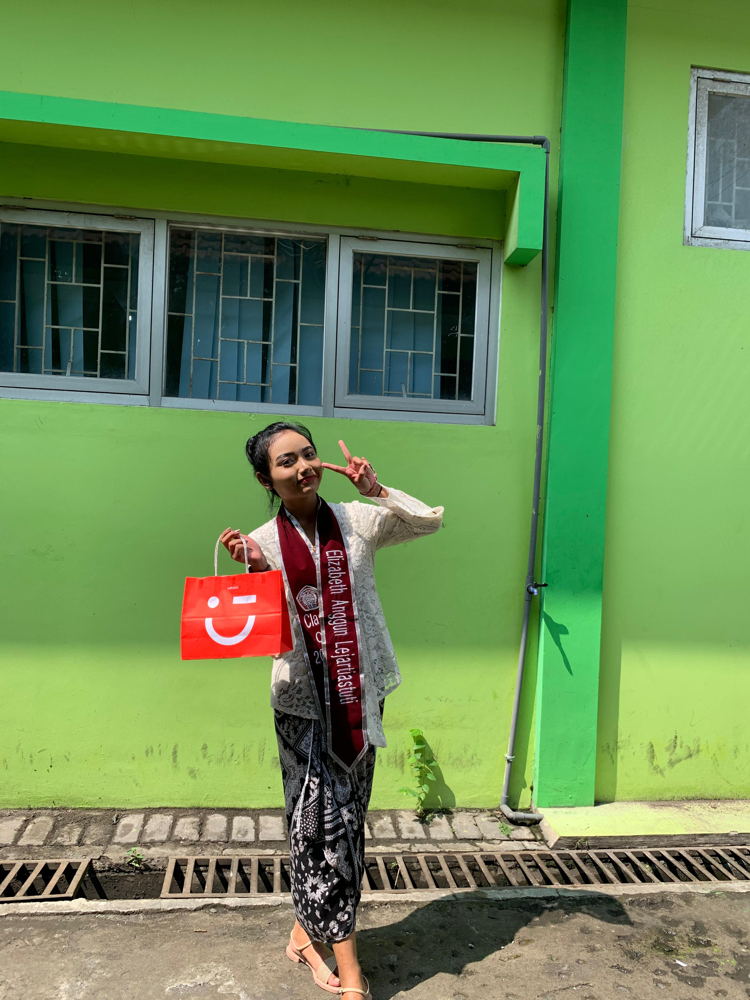

|  | Nama | Elizabeth Anggun Lejartiastuti |
|---|---|---|
| Tanggal Lahir | 03 Juli 2008 | |
| Tempat Lahir | Surabaya | |
| Pekerjaan | Pelajar |
Saya Elizabeth Anggun Lejartiastuti biasa dipanggil Eliza, saya lahir pada tanggal 03 Juli 2008 di Surabaya, tahun ini saya berumur 16 tahun. Warna kesukaan saya adalah biru dan saya suka lontong kupang. Saya memiliki hobi mendengarkan musik serta bermain alat musik, lagu yang sering saya dengarkan saat ini adalah about you - The 1957. Saya suka menonton series korea dan anime, series favorit saya adalah Hospital Playlist, sedangkan anime favorit saya adalah Kaichou Wa Maid-sama. Asal sekolah saya dari SMP Nusantara Krian dan saat ini saya bersekolah di SMK Telkom Sidoarjo. Saya adalah anak kedua dari dua bersaudara, saya memiliki seorang kakak laki-laki. Pengalaman serta prestasi saya di SMP adalah rangking paralel selama 3 semester, juara 3 photo contest, ,juara 1 scout moive, juara 3 scout cinematic, lulusan terbaik 1 di SMP dan saya juga pernah mengikuti olimpiade mandiri, yaitu matematika dan IPS. Saya juga seorang ketua OSIS di SMP dan mengikuti dewan penggalang.